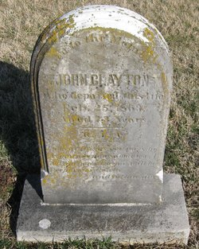
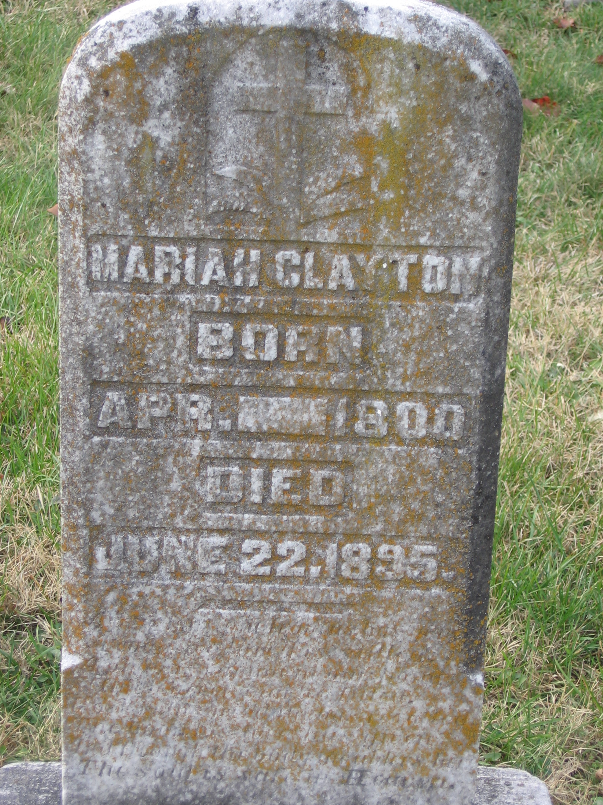
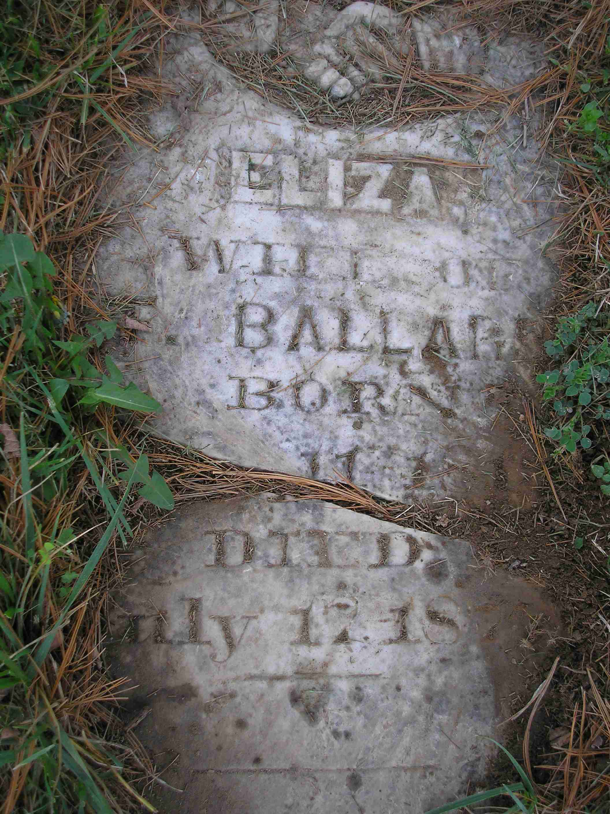
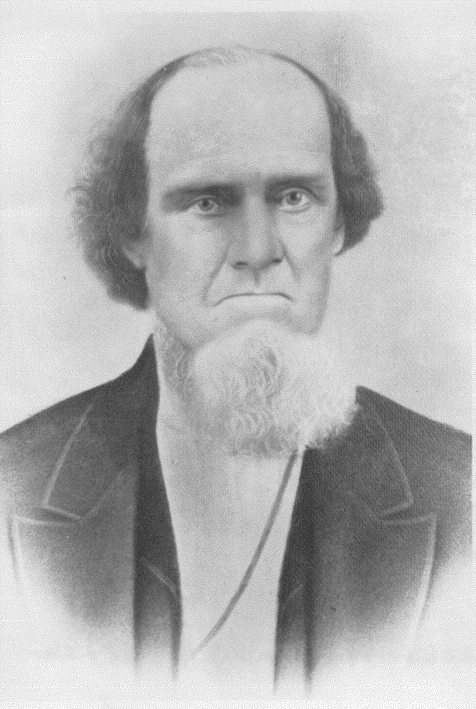
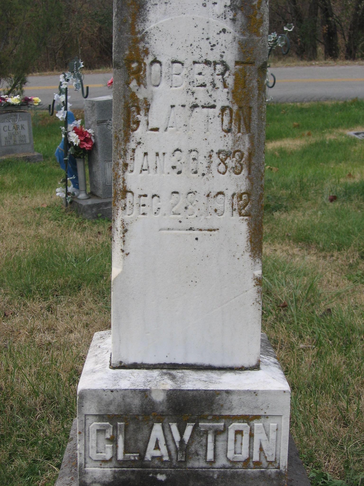

{kind=link}
{kind=link}
{kind=link}
{kind=link}
{kind=link}


11. Sarah Sally CLAYTON (Joseph
, Francis
) was born about 1782 in Kentucky. She died in 1813/1846.
|
Sarah married 1 Barnabas CARTER SR on 26 Dec 1802 in BARDSTOWN NELSON CO, Kentucky. Barnabas was born in 1760/1780 in VA. He died on 24 Aug 1841 in NELSON County, Kentucky. |
They had the following children.
19 M i
Joseph CARTER. 20 M ii
Barnabas Clayton CARTER. 21 M iii
William CARTER. 22 M iv
John CARTER. 23 M v
Thomas CARTER.
13. Mary Polly "POLLY" CLAYTON (Joseph
, Francis
) was born in 1788 in Kentucky. She died in 1824. |
POLLY married 1 John FORD on 18 Nov 1808 in NELSON COUNTY, Kentucky. |
They had the following children.
14. John Jack "Jake" CLAYTON [scrapbook] 1, 2, 3, 4 (Joseph
, Francis
) was born in 1790 in Nelson County, Kentucky. He died on 25 Feb 1863 in Marion, County, Kentucky. He was buried 5 in Holy Cross Cemetery, Marion County, Ky.
|
 |
Jake married 1, 2, 3, 4 Maria Green HAYDEN [scrapbook] 3, 4, 5, 6, daughter of Robert HAYDEN and Marie Therese CARLIN, on 6 Apr 1817 in Bardstown, Nelson County, Kentucky. Maria was born 7 in 1803 in Nelson County, KY. She died on 22 Jun 1895 in Marion County, Ky. She was buried in 1895 in Holy Cross Cemetery, Marion County, Ky.
|
 |
Jake and Maria had the following children.
30 F i
Eliza CLAYTON [scrapbook] was born on 11 Jan 1819 in NELSON County, Kentucky. She died on 17 Jul 1875 in NELSON County, Kentucky. She was buried in Holy Cross Cemetery, Marion County, Ky.
Bottom half of her stone was seen today, 15Apr 2024, on ground in pine needles, very near Chas W. Donahoo and his wife Nannie E.
Eliza married Thomas H BALLARD [scrapbook], son of Proctor BALLARD and Mary Ann WOODWORD, in 1865. Thomas was born on 6 Mar 1811 in Nelson County, Kentucky. He died on 4 Dec 1885 in Nelson County, Kentucky. He was buried 1 in Holy Cross Cemetery, Marion County, Kentucky. 
Eliza also married 1 John DAWSON on 28 Dec 1844 in Nelson County, Ky. + 31 M ii Joseph James CLAYTON was born in 1821. + 32 M iii James C CLAYTON was born in 1821. + 33 F iv Anna M CLAYTON was born in 1822. + 34 F v Mary Juliana CLAYTON was born on 22 Nov 1823. She died on 25 Apr 1913. + 35 F vi Latitia Ann CLAYTON was born on 9 Sep 1827. She died on 28 Jul 1877. 36 M vii
Robert Green CLAYTON [scrapbook] 1, 2, 3, 4 was born on 30 Jan 1831 in Washington, Kentucky. He died on 28 Dec 1912 in Marion County KY. He was buried in Holy Cross Cemetery, Marion County, KY.
Robert was counted in a census 5 in 1850 in Nelson County, KENTUCKY. He was counted in a census 6 in 1860 in Nelson County, KENTUCKY. He was counted in a census 7 in 1880 in Nelson County, Kentucky. He was counted in a census 8 in 1900 in New Hope, Nelson County, Ky.
+ 37 F viii Mary Melvina CLAYTON was born in 1833. She died in 1936. + 38 F ix Martha Bethany CLAYTON was born in 1837. + 39 M x John James CLAYTON was born on 16 Feb 1840. He died on 12 Mar 1914. + 40 F xi Nancy CLAYTON was born on 18 Jun 1842. She died on 9 May 1923. + 41 M xii Francis Lemuel "Lem" CLAYTON was born on 3 Nov 1845. He died in 1897.
15. Joseph CLAYTON (Joseph
, Francis
) was born in 1799 in Nelson County, Ky. He died on 7 Nov 1859 in Nelson County, KY. |
Joseph married Susannah Frances CLARK, daughter of Joseph CLARK and Mary GOODWIN, on 5 Oct 1819 in WASHINGTON COUNTY KY. Susannah was born in 1798 in Washington County, Ky. |
They had the following children.
+ 42 M i James Carlan CLAYTON was born on 1 Nov 1821. He died on 19 Sep 1871. 43 M ii
Ephraim CLAYTON was born in 1824 in Kentucky.
Ephraim was counted in a census 1 in 1850 in Nelson County Kentucky.44 M iii
Benjamin CLAYTON was born in 1827. He died in Jan 1856 in NELSON County, Kentucky.
Benjamin was counted in a census 1 in 1850 in Nelson County Kentucky.45 F iv
Bessy CLAYTON was born in 1827.
Bessy was counted in a census 1 in 1850 in Nelson County Kentucky.46 F v
Magdalene CLAYTON was born in 1829 in Kentucky.
Magdalene was counted in a census 1 in 1850 in Nelson County Kentucky.47 F vi
Cecily CLAYTON was born in 1831 in NELSON County, Kentucky.
Cecily was counted in a census 1 in 1850 in Nelson County Kentucky.
Cecily married 1 John Darwin FOGLE on 5 Apr 1853 in NELSON County, Kentucky. + 48 M vii Frank Lemuel "UNCLE FRANK" CLAYTON was born in Jan 1835. He died on 9 Dec 1915. 49 F viii
Helen CLAYTON was born in 1837.
Helen was counted in a census 1 in 1850 in Nelson County Kentucky.
16. William CLAYTON (Joseph
, Francis
) was born in 1800 in Nelson County, Kentucky. He died after 1870.
|
William married 1 Elizabeth NOLIN, daughter of Elizabeth BURCH, on 16 Jun 1821 in Bardstown, Nelson County, Kentucky. |
They had the following children.
+ 50 M i Robert Green CLAYTON was born about 1832. He died on 28 Dec 1912. 51 ii
G B CLAYTON was born in 1833 in Kentucky.
G B CLAYTON-476 was counted in a census 1 in 1850 in Nelson County, KENTUCKY.52 F iii
Elizabeth CLAYTON was born in 1834 in Kentucky.
Elizabeth was counted in a census 1 in 1860 in Marion County KY, Kentucky. She was counted in a census 2 in 1850 in Nelson County, KENTUCKY.53 M iv
A J CLAYTON was born in 1837 in Kentucky.
A J CLAYTON-478 was counted in a census 1 in 1850 in Nelson County, KENTUCKY.54 F v
Angeline CLAYTON was born in 1837 in Kentucky.
Angeline was counted in a census 1 in 1850 in Nelson County, KENTUCKY.55 M vi
William Riley CLAYTON was born in 1839 in NELSON County, Kentucky. He died on 22 May 1893. He was buried in Holy Cross Cemetery, Marion County, Ky.
William was counted in a census 1 in 1860 in Marion County KY, Kentucky. He was counted in a census 2 in 1850 in Nelson County, KENTUCKY.
17. Charles C CLAYTON (Joseph
, Francis
) was born on 2 Feb 1802 in Nelson County, Kentucky. He died on 16 Nov 1874 in St Joseph, Daviess, Ky. He was buried in St Alphonsus Cemetery, St Joseph, Ky.
|
Charles married Barbara HAGAN, daughter of Benjamin HAGAN and Mary Ann CISSELL "NANCY", on 21 Apr 1830 in NELSON County, Kentucky. Barbara was born in 1805. She died on 22 Jul 1890. She was buried in St Alphonsus Cemetery, St Joseph, Ky. |
They had the following children.
+ 56 M i William Christopher CLAYTON was born on 11 Mar 1831. He died on 28 May 1909. + 57 M ii John M CLAYTON was born on 1 Sep 1833. He died on 23 Jan 1899. + 58 M iii Edward Pierce CLAYTON was born in 1835. He died about 1914. + 59 M iv George Maxwell CLAYTON was born about 1837. He died on 20 Feb 1909. 60 M v
James Granville CLAYTON was born on 9 Jul 1838 in NELSON County, Kentucky. He died before 1850.
Not listed with the family in the 1850 census of Daviess County KY+ 61 M vi Thomas Norell CLAYTON was born on 2 May 1840. He died on 15 Jul 1908. + 62 M vii George Washington CLAYTON was born in Aug 1843. He died on 1 Mar 1913.
18. Catherine CLAYTON (Joseph
, Francis
) was born about 1803 in Nelson County, Ky. |
Catherine married Joseph HAYDEN on 26 Aug 1823 in Nelson County, Kentucky. |
They had the following children.
63 M i
Elbert HAYDEN. 64 F ii
Ellen HAYDEN. 65 F iii
Elizabeth HAYDEN. 66 F iv
Jane HAYDEN. 67 M v
James HAYDEN. 68 M vi
Urban HAYDEN.